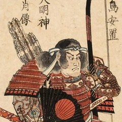
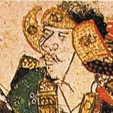
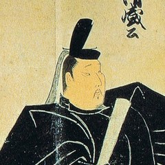
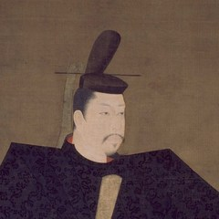
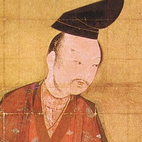
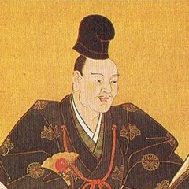

Illustrated Account of the Mongol Invasions, late thirteenth century. Suenaga commissioned the scrolls after serving in the defenses of 1274 and 1281. Compare the surviving versions at Princeton.
Start on the right with Suenaga’s wounded horse. In his account, Suenaga names the man who rode to his aid. Each agreed to testify that the other had fought. SJT 282–283.
The people and their relationships
Taira, Fujiwara, and Minamoto
Read the family name first.Minamoto no Yoshitsune means “Yoshitsune of the Minamoto.” The word no means “of.”
平
Taira
Heike 平家
Kiyomori → Antoku
Kiyomori’s daughter Tokuko is Emperor Antoku’s mother. The fall of this family gives The Tale of the Heike its title.
藤原
Fujiwara
Court ministers
Yorinaga · Nobuyori
The Fujiwara held high offices in Kyoto. In the readings, Yorinaga advises Sutoku in 1156. Nobuyori joins Yoshitomo in the palace attack in 1159.
源
Minamoto
Genji 源氏
Yoritomo · Yoshitsune
Yoritomo organizes the eastern warriors at Kamakura. His younger brother Yoshitsune commands the force that defeats the Taira at Dan-no-ura.
One fight, all three families. In 1156, Fujiwara no Yorinaga and Minamoto no Tametomo backed retired emperor Sutoku. Tametomo’s own brother Yoshitomo fought on the other side alongside Taira no Kiyomori. SJT 270–276.
Genpei 源平 combines the characters for Minamoto (源) and Taira (平). It names their war of 1180–1185. Ebrey 185–188 · SJT 276–280.
1156 / 1159
Kyoto: two brothers on opposite sides

Minamoto noTametomoBacks retired emperor Sutoku.
brothers; opponents, 1156

Minamoto noYoshitomoBacks Go-Shirakawa in 1156.
allies, 1156; enemies, 1159

Taira noKiyomoriDefeats Yoshitomo in 1159.
Sutoku and Go-Shirakawa were also brothers. The minister on Sutoku’s side in 1156 was Fujiwara no Yorinaga; Yoshitomo’s ally in 1159 was Fujiwara no Nobuyori. SJT 270–276.
1180–1185
The Minamoto: who gave orders and who fought
Minamoto noYoshitomoFather of the three men below.
three sons

Minamoto noYoritomoDirects the war from Kamakura.
範頼
Minamoto noNoriyoriLeads an army west for Yoritomo.

Minamoto noYoshitsuneCommands at Dan-no-ura.

Minamoto noYoshinakaYoritomo’s cousin and rival.
Yoshinaka takes Kyoto. Yoritomo sends his younger half-brothers, Noriyori and Yoshitsune, against him. Yoshitsune later defeats the Taira at sea.
The images are details of historical artworks. The Jingo-ji portrait is traditionally called Yoritomo; its identification is disputed. Tokiko and Noriyori are shown by their written names.
North up. Coastlines from Natural Earth, 1:50 million. Dots locate towns or the vicinity of a battle. Ebrey 183–187, 195–196 and SJT 280–283.
Kyoto was the imperial capital. Court factions called warriors into the city in 1156 and 1159. Kamakura, far to the east, was where Yoritomo could guarantee land to men who swore to serve him. Ebrey 183–187.
Dan-no-ura marks the strait where Yoshitsune defeated the Taira in 1185. Hakata Bay, on northern Kyūshū, belongs to the next century: Suenaga fought there against the invasion from across the sea. Ebrey 186, 195–196 and SJT 282–283.
Who fought for whom
Minamoto = Genji 源氏. Taira = Heike 平家. Genpei takes one character from each name, 源平. Two members of the same house could fight on opposite sides. SJT 270–271, 276–278.
1156 · Hōgen conflict in Kyoto
Minamoto no Tametomo
Younger brother of Yoshitomo. Fights for retired emperor Sutoku. He urges a night attack. Fujiwara no Yorinaga, the minister on his side, rejects it.
Minamoto no Yoshitomo
Older brother. Fights for Emperor Go-Shirakawa alongside Taira no Kiyomori. His side carries out the night attack that Tametomo proposed.
Taira no Kiyomori
Yoshitomo’s ally in 1156. His greater reward at court helps explain why the alliance breaks. SJT 270–274.
1159 · Heiji conflict in Kyoto
Yoshitomo changes allies. He and the minister Fujiwara no Nobuyori attack Sanjō Palace while Kiyomori is away. Kiyomori returns and defeats them. Yorinaga belongs to the first conflict, Nobuyori to the second. SJT 273–276.
1180–1185 · Genpei War
Minamoto no Yoritomo
Yoshitomo’s son. Organizes eastern warriors at Kamakura and sends his brothers west. He receives the title of shogun in 1192.
Minamoto no Yoshinaka
Yoritomo’s cousin and rival. Drives the Taira out of Kyoto. Go-Shirakawa then calls on Yoritomo for help against him.
Minamoto no Noriyori and Minamoto no Yoshitsune
Yoritomo’s younger half-brothers and field commanders. Yoshitsune defeats Yoshinaka and then the Taira at Dan-no-ura. Yoritomo controls appointments and rewards in the east.
Taira no Kiyomori and Emperor Antoku
Kiyomori builds Taira power through court offices and marriage. He dies in 1181. His grandson Antoku is the child emperor who drowns at Dan-no-ura in 1185. Ebrey 185–188 and SJT 276–280.
Shogun is the title the court grants Yoritomo. Hōjō Masako is his widow. After the deaths of their sons, the Hōjō family retains power as regents for the shogun. Ebrey 187–189.
Night Attack on the Sanjō Palace, detail. A late thirteenth-century handscroll depicts the attack of 1159. Museum of Fine Arts, Boston, 11.4000. Unroll the whole painting, right to left.
In the painting, the roofs divide the burning palace from the people caught outside. In the written account, the attackers first secure the gates. Read the escape scenes alongside the passage. SJT 274–276 · Watch the MFA’s scroll film.
Atsumori’s flute
In The Tale of the Heike, Saitō Sanemori serves the Taira but knows the eastern warriors from his earlier service. His speech about eastern toughness is a character’s boast in a war tale. SJT 277–278.
At Ichi-no-Tani, Kumagai Naozane, fighting for the Minamoto, calls a mounted Taira warrior back from the sea. When he removes the helmet, he sees a boy about his own son’s age. Only after killing him does he discover the flute and learn his name: Taira no Atsumori. SJT 279–280.
“I would like to spare you”
Naozane to Atsumori, The Tale of the Heike, SJT 279–280. Reader
Watch Tokiko and Antoku · 11:16–13:51 (2 min 35 sec, English dub). Start as Antoku looks up at his grandmother. Stop as the underwater bubbles fade and the picture cuts back to the ships.
Tokiko is Kiyomori’s widow. Her daughter Tokuko is Antoku’s mother. In the scene, Tokiko takes her grandson into the sea as Biwa recounts his final prayer. The Heike Story, episode 11.
Land, office and religious life at Kamakura
A jitō (estate steward) could draw income from an estate in return for service. A shugo (provincial military governor) had responsibilities across a province. Yoritomo could confirm a warrior’s existing claim to office. The 1215 order confirming a widow as jitō shows what that promise meant for a household. Ebrey 187–190.
The war tales begin with impermanence. In Kamakura Japan, Pure Land teachers Hōnen and Shinran taught reliance on Amida. Eisai and Dōgen transmitted Zen lineages. Nichiren centered his teaching on the Lotus Sutra. Hōjō support for Zen was one part of that larger religious world. Ebrey 192–195 and SJT 276–277.
Dashed lines show approximate fleet routes. The first expedition sailed from Korea. In 1281 a second fleet sailed from China. Plate 16, after Albert Herrmann’s historical atlas (1935); Natural Earth coastlines.
In 1274, warriors encountered an invading force at Hakata Bay. By 1281 the defenders had built a coastal wall and could strike at ships offshore. A typhoon struck the 1281 fleet after weeks of fighting. Ebrey 195–196 and SJT 280–281.
Shōni Kagesuke
Japanese commander on the day of the 1274 engagement. Takezaki Suenaga, a warrior from Higo, reports to him and rides out with four followers.
Kikuchi Takefusa
Already returning from fighting at Akasaka when Suenaga meets him. Suenaga calls out his own name so Takefusa can recognize him.
Togenda Sukemitsu
Suenaga’s retainer. Advises him to wait for reinforcements and a witness.
Shiroishi Michiyasu
Arrives with mounted men after Suenaga is wounded. Each agrees to witness the other’s service. SJT 282–283.
“The way of the bow and arrow is to do what is worthy of reward. Charge!”